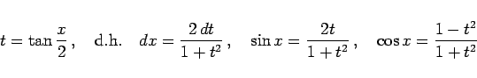

Inhalt Index DeskTop Bronstein

 Integralrechnung Unbestimmtes Integral Integration trigonometrischer Funktionen
Integralrechnung Unbestimmtes Integral Integration trigonometrischer Funktionen


Mit Hilfe der Universalsubstitution
|  | (8.25) |
läßt sich ein Integral der Form
auf ein Integral einer rationalen Funktion zurückführen, wobei mit R eine rationale Funktion des Ausdrucks bezeichnet ist, vor dem es steht. In einzelnen Fällen können einfachere Substitutionen eingesetzt werden.
| Beispiel |
|
|
Wenn der Integrand in (8.26) nur gerade Potenzen der Funktionen  und
und  enthält, kann er durch die Substitution wesentlich einfacher auf ein Integral einer rationalen Funktion zurückgeführt werden.
enthält, kann er durch die Substitution wesentlich einfacher auf ein Integral einer rationalen Funktion zurückgeführt werden.